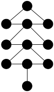
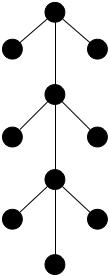
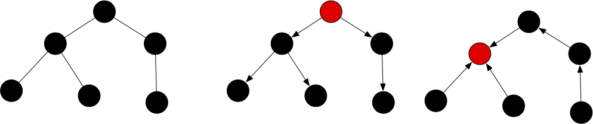
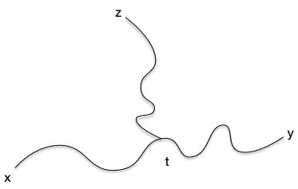

Arbres
Explorer les propriétés et l'intérêt de l'arbre.
Définition
Un arbre est un graphe $T = (V, E)$ qui est :
Par exemple, même si les deux graphes ci-dessous sont connexes, seul le graphe de droite est un arbre.
 |
 |
| A | B |
Finissons cette partie par une définissions filant la métaphore botaniste :
Définition
Un graphe dont chaque partie connexe est un arbre est appelée une forêt.
Les définitions précédentes concernaient les graphes, il existe un pendant pour les graphes orientés, les arborescences :
Définition
Une arborescence est un graphe orienté $G = (V, E)$ tel que :
- le graphe $T = (V, E')$ tel que $xy \in E'$ si et seulement si $xy \in E$ ou $yx \in E$ est un arbre
- tel qu'il existe un sommet $r$, appelé racine tel que pour tout $x \in V$ il existe un chemin allant de $r$ à $x$ dans $G$.
On a parfois envie que les chemin ailles vers la racine plutôt qu'en partent et a pour ça la notion d'arbre dirigé enraciné :
Définition
Un arbre dirigé enraciné en $r$ est un graphe orienté $G = (V, E)$ tel que :
- le graphe $T = (V, E')$ tel que $xy \in E'$ si et seulement si $xy \in E$ ou $yx \in E$ est un arbre
- pour tout $x \in V$ il existe un chemin allant de $x$ à $r$ dans $G$.
Ainsi le graphe de gauche est un arbre, celui du milieu une arborescence et celui de droite un arbre dirigé enraciné :

Propriétés fondamentales
Nous allons montrer ici 5 propriétés équivalentes permettant de caractériser un arbre. Les propriétés sont intéressantes et la façon de les prouver également :
Théorème
Les cinq propositions suivantes sont équivalentes :
- $G=(V, E)$ est un arbre
- $G=(V, E)$ est connexe et $\vert E \vert = \vert V \vert - 1$
- $G=(V, E)$ est sans cycle et $\vert E \vert = \vert V \vert - 1$
- $G=(V, E)$ est sans cycle et l'ajout d'une arête quelconque crée un cycle
- $G=(V, E)$ est connexe et la suppression d'une arête quelconque le déconnecte
preuve
preuve
- $1 \Rightarrow 2$ : par définition
- $2 \Rightarrow 3$ : S'il existait un cycle, on pourrait en enlever une arête et $G$ resterait connexe. Or on a vu que tout graphe connexe possède au moins $\vert V \vert - 1$ arêtes ce qui apporte une contradiction
- $3 \Rightarrow 4$ On a vu que tout graphe sans cycle possède au plus $\vert V \vert - 1$ arêtes
- $4 \Rightarrow 5$ Si le graphe n'était pas connexe, on pourrait ajouter une arête reliant deux de ses composantes connexes sans rajouter de cycle
- $5 \Rightarrow 1$ Si le graphe possédait un cycle, on pourrait supprimer une arête de ce cycle sans déconnecter le graphe
Ces équivalences nous permettent de trouver un algorithme efficace pour savoir si un graphe est un arbre. Trouvez le :
Montrez que la proposition précédente permet de créer un algorithme en $\mathcal{O}(\vert V \vert)$ pour savoir si un graphe $G=(V, E)$ est un arbre.
solution
solution
On commence par vérifier que le graphe a $\vert V \vert -1$ arêtes. Si c'est le cas, on utilise l'algorithme de recherche des composantes connexes qui est en $\mathcal{O}(\vert E \vert)$, donc en $\mathcal{O}(\vert V \vert)$ dans notre cas pour vérifier qu'il n'y a bien qu'une composante connexe.
Le théorème précédent est important car il montre l'optimalité d'un arbre : c'est le graphe avec un nombre minimum d'arête qui est connexe. C'est pourquoi cette structure est très utilisé dans les problèmes de réseaux réels. Cette optimalité vient avec un coût puisque si une arête casse, on déconnecte le graphe.
De plus, cette optimalité minimale fait que nombre de problèmes compliqués (voir NP-complets) deviennent facile (polynomial et souvent linéaire) sur les arbres.
Théorème
Les cinq propositions suivantes sont équivalentes :
- $G=(V, E)$ est une arborescence de racine $r$
- $G=(V, E)$ est sans circuit et il existe un sommet $r$ pour lequel $\delta^{-}(r) = 0$ et $\delta^{-}(x) = 1$ pour tout autre sommet.
- $G=(V, E)$
preuve
preuve
TBD (mais clair)
Sommets et feuilles
Définition
Une feuille d'un arbre $T = (V, E)$ est un sommet de degré 1. Un sommet interne est un sommet de degré strictement supérieur à 1.
Définition
Une feuille d'une arborescence $T = (V, E)$ est un sommet de degré sortant 0. Un sommet interne est un sommet de degré sortant strictement supérieur à 0.
Commençons par une propriété sympathique des feuilles d'un arbre :
Proposition
Tout arbre avec 3 sommets ou plus possède toujours :
- au moins 2 feuilles
- au moins un sommet interne.
preuve
preuve
Comme un arbre est connexe, tout sommet a un degré supérieur ou égal à 1. S'il y avait 1 feuille ou moins, on aurait $\sum\delta(x) \geq 2(n-1) + 1 = 2n-1$. Or $\sum\delta(x) = 2\vert E \vert = 2n-2$, ce qui est impossible.
Enfin, si un arbre ne possédait que des feuilles, on aurait $\sum\delta(x) = n = 2\vert E \vert = 2n-2$, ce qui n'est possible que pour $n=2$.
Pour se familiariser avec les feuilles, commençons par résoudre l'exercice suivant :
Montrez que si $T = (V, E)$ est un arbre tel que tout sommet interne est de degré 3 (on appelle ces arbres ternaire) alors si $p$ est le nombre de ses feuilles et $q$ le nombre de ses sommets internes on a :
- $p = q + 2$
- $\vert V \vert = 2p-2$
- $\vert E \vert = 2p-3$
solution
solution
Si on note $p$ le nombre de feuilles et $q$ le nombre de sommets intérieur, on a : $\vert V \vert = p + q = \vert E \vert +1 $. De là si $p = q + 2$ on a bien $\vert V \vert = 2p-2$ et $\vert E \vert = 2p-3$.
Comme la somme des degrés $p + 3q$ vaut 2 fois le nombre d'arête, donc $\vert E \vert = 1/2 \cdot (p+3q) = p + q - 1$. On a alors $2(p+q-1) = p+3q$, ce qui donne $p = q + 2$ et termine la preuve.
Un des principal intérêt des feuilles est que cela permet d'associer aux arbres un schéma d'élimination aux arbres. Commençons par un petit exercice pour le voir :
Montrez que si $T = (V, E)$ est un arbre et $x\in V$ une de ses feuilles, alors $T\backslash \{x\}$ est un arbre.
solution
solution
Comme $x$ est une feuille de $T$ :
- $T\backslash \{x\}$ est connexe,
- $T\backslash \{x\}$ à $\vert V \vert - 2$ arêtes
C'est donc un arbre.
Et que se passe-t-il si on supprime un sommet interne ?
Montrez que si $T = (V, E)$ est un arbre et $x\in V$ un de ses sommets internes, alors $T\backslash \{x\}$ est une forêt avec $\delta_T(x) > 1$ parties connexes.
solution
solution
Comme le degré d'un sommet interne est strictement plus grand que 1, $T\backslash \{x\}$ ne peut pas être connexe (il n'a pas assez d'arête) mais chaque composante connexe ne peut avoir de cycles (sinon $T$ en aurait) : ce sont des arbres.
Le même raisonnement implique que supprimer une arête d'un arbre produit une forêt de 2 arbres. Comme on en supprime $\delta(x)$, on produit $\delta(x)$ composantes connexes (on supprime itérativement les arêtes $xy$ de la composante connexe contenant $x$).
Les deux exercices précédents nous permettent de conclure sur l'existence des ordres d'effeuillage pur tout arbre :
Définition
Pour tout arbre $T = (V, E)$, les ordres $x_1, \dots, x_n$ de ses sommets tels que $T \backslash \{x_1, x_2, \dots x_i\}$ est un arbre pour tout $1\leq i < \vert V \vert$ sont appelées ordre d'effeuillage.
Les ordre d'effeuillage permettent tout un tas de raisonnements par récurrence et sont a la base de nombre d'algorithmes d'arbres car ils préserve la structure de l'arbre.
Terminons cette partie par un petit exercice utilisant les feuilles et les ordres d'effeuillages.
Montrez que si $T = (V, E)$ est un arbre et $x$ un sommet :
- tout parcours DFS en partant de $x$ est un effeuillage de $T$,
- les ensembles $S(x, y) = \{z | y \text{ est sur le chemin entre }x \text{ et } z\}$ sont des intervalles.
corrigé
corrigé
Un DFS sur un arbre va s'arrêter aux feuilles. De plus il est clair que l'ordre produit par une DFS à partir de $x$ va placer les éléments de $S(x, y)$ avant $y$ en un bloc : lorsque le DFS passe par $y$ la première fois tous les éléments suivant placés dans l'ordre jusqu'à l'ajout de $y$ seront dans $S(x, y)$.
On en déduit que :
- en supprimant tous les sommets avant $y$ dans l'ordre du DFS, $y$ est une feuille,
- si $z, z' \in S(x, y)$, alors tout l'intervalle $[z, z']$ est dans $S(x, y)$
Chemins et arbres
Proposition
Un graphe est un arbre si et seulement si quels que soient deux sommets $x$ et $y$, il n'existe qu'un seul chemin entre $x$ et $y$.
preuve
preuve
Le graphe est connexe.
S'il existait 2 chemins distincts pour aller de $x$ à $y$ on se placerait au premier élément distinct et au premier élément en commun après celui-ci et on aurait un cycle.
Corollaire
Pour une arborescence de racine $r$, pour chaque sommet $x$ il existe un unique chemin allant $r$ à $x$.
preuve
preuve
TBD : clair car le graphe associé est un arbre.
Enfin terminons cette partie par un petit exercice structurel qui introduit la notion de médiane dans les arbres :
Montrez que si $T = (V, E)$ est un arbre et $x$, $y$ et $z$ trois sommets. Il existe un unique sommet qui est à la fois sur le chemin entre $x$ et $y$, le chemin entre $x$ et $z$ et sur le chemin entre $y$ et $z$.
corrigé
corrigé
Se déduit de l'unicité des chemins. Considérant les chemins :
- $x = u_0 \dots u_k = y$
- $z = v_0 \dots v_l = z$
Si $u_i = v_j$ alors $u_i \dots u_k = v_j \dots v_l$ car sinon, comme $u_k = v_l - y$ il existerait un cycle dans l'arbre. Le plus petit indice $i$ et $j$ tel que $u_i = v_j$ est aussi sur le chemin entre $x$ et $z$ et on est dans la situation ci-dessous ($t$ pouvant être égal à $x$, $y$ ou $z$) :

Et $t$ est bien l'unique intersection des 3 chemins.
Cette notion d'intersection de chemins se généralise dans un type de graphes particulier appelé graphes médians. Leshypercubes en sont des exemples.
Encodage
TBD écrire propre
Codage par parant pour les arborescence se dérive en un codage pour les arbre en choisissant une racine ($T[r] = r$ pour celle là)